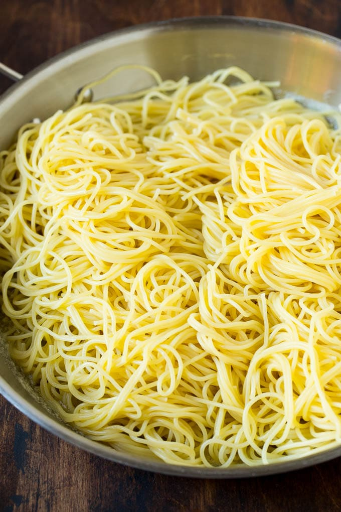

Shrimp Scampi Pasta
Description: Fresh tomatoes, garlic and basil bring summertime flavors to a classic dinner of Shrimp Scampi Pasta. serving size: 4
note: contains allergens such as seafood, nuts

Prep time: 5 Cook time: 5 mins
Ingredients:
- 10 oz Angel hair pasta
- Kosher salt
- 2 tbsp Olive oil
- 1 tbsp chopped Garlic
- 1/4 tsp Crushed red pepper flakes
- 1 lb Shrimp peeled and deveined
- 3/4 cup White wine
- 1 Lemon (juiced)
- 1 1/2 cups Tomato (chopped)
- 2 tbsp Butter
- 1/2 cup Basil (chopped)
- Parmesan cheese (grated)
Instructions:
You’ll first need to salt a pot of water and cook the angel hair pasta according to package instructions. You want the pasta to be al dente (it it’s too mushy, it won’t hold up next to the shrimp). Once the pasta is cooked, reserve a bit of the cooking water before draining.
Meanwhile, sauté the garlic and red pepper flakes in a little olive oil just until fragrant. Add the shrimp and cook until pink throughout.

Add in the wine, lemon juice, tomatoes, and butter, and cook until the butter is melted. Gently stir in the drained pasta and pour in a little pasta water to make the shrimp scampi more saucy, if desired. Garnish your homemade shrimp scampi with torn basil leaves and grated Parmesan cheese.

Links to recipe websites:
This website would make a good reference because it is short and allows users to view all information efficiently without scrolling. There is also a photo gallery that would allow many images to be viewed and organized well without scrolling.
This website has a short table of contents to jump to different sections of the article. It also uses large and numbered images for clarity and engagement.
I really enjoy the minimalistic style of organizing content and the small font that further enhances the large images of the food.
Links to non-recipe websites:
The way numbers are presented and formatted would be good for the recipe contents (measurements, quantites, etc). The directions are also clear and presented with simple graphics that would do well wih a recipe.
This is a good site reference because it is heavily focused on user experience because of the continous scrolling. This would be a good design for a recipie website it is interesting, presents contents one by one, and is quite short.
This is a good site reference because it is balanaced: visually focused with important descriptions. The images are attractive, nice colors for recipie websites, short and easy to navigate.